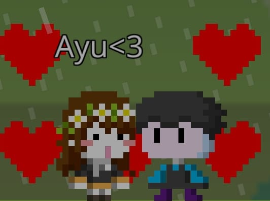
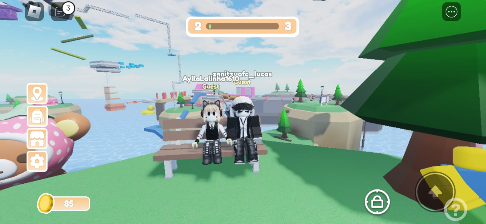
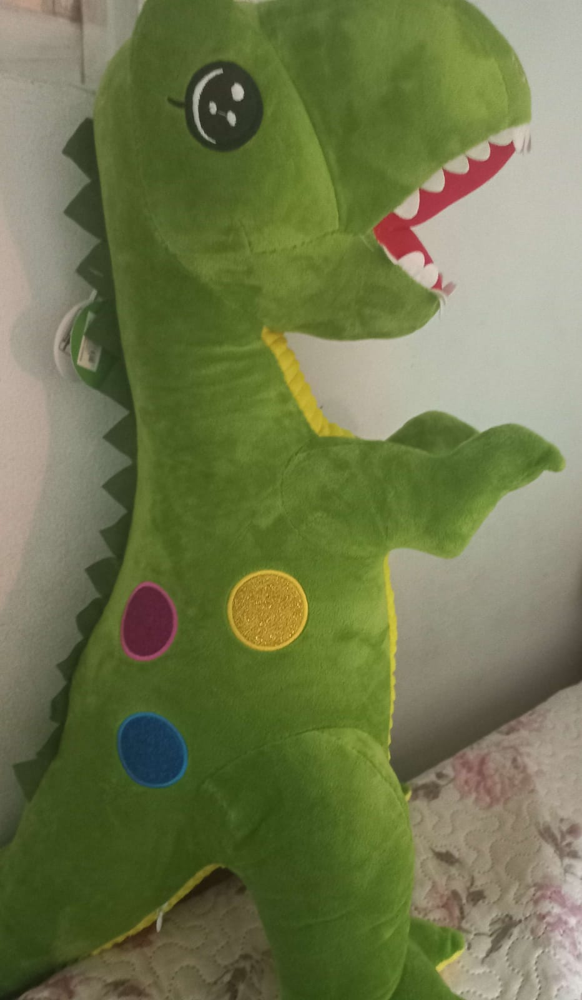

Parabéns para a
Ayu Voltari!
Clique nos botões do menu ao lado para
descobrir surpresas especiais feitas para você.


Clique nos botões do menu ao lado para
descobrir surpresas especiais feitas para você.
Eu fiz esse site como um pequeno presente para representar um pouco da nossa amizade kksks. Sei que às vezes a gente passa um longo tempo sem se falar, mas eu queria dizer que sempre é incrível conversar com você, ouvir você falando sobre como foi seu dia, sobre coisas que aconteceram... Isso sempre me deixa feliz!
Eu fico tão realizado quando vejo que você está bem, e quando você não está eu fico triste (e desculpa por não poder ajudar muito com isso). Mas eu quero te desejar um feliz aniversário, sua tabacuda-
E nossa, nem parece que faz 3 anos que a gente se conheceu! Faz 3 anos que eu entrei no TikTok e cliquei sem querer várias vezes no 👋🏽 pensando que tinha bugado KSKS. Bem, eu queria dizer que esses 3 anos de amizade foram incríveis para mim. As risadas, os momentos que passamos... tudo foi extremamente incrível!
Obrigado por tudo que fez por mim, Ayu. Eu te amo, muito mesmo! E rawr rawr- 🦖💜


